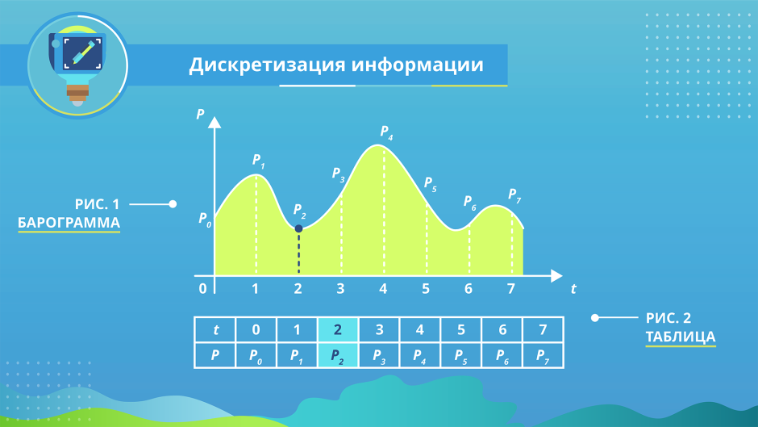
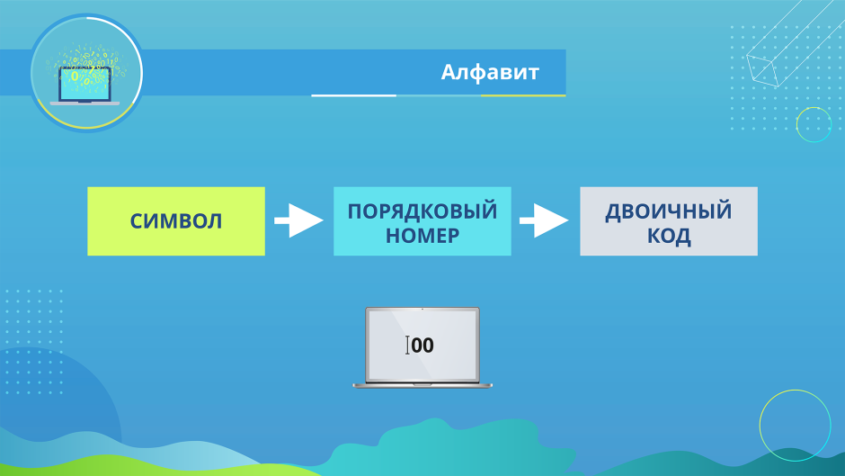
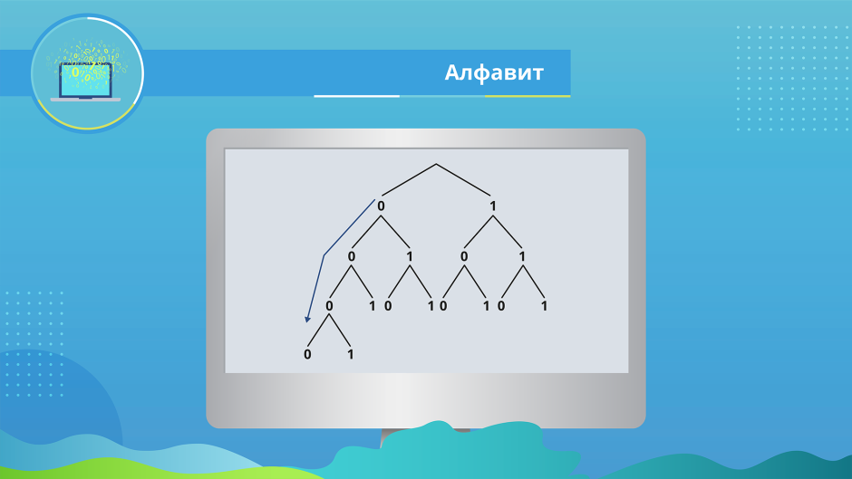
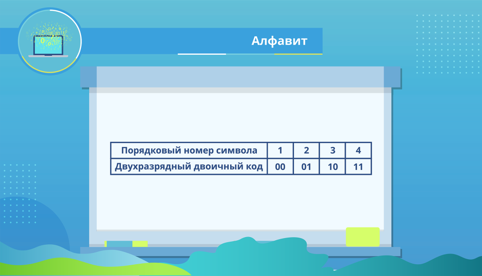
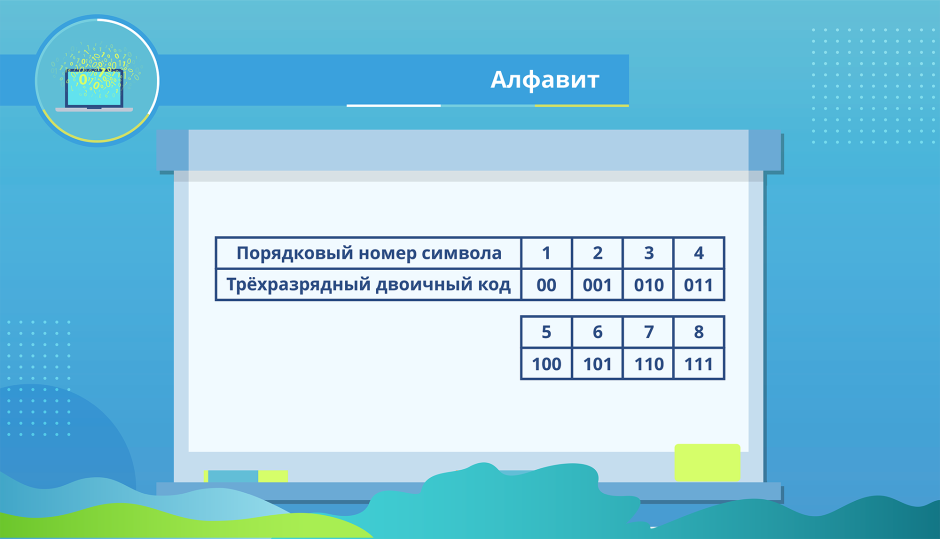
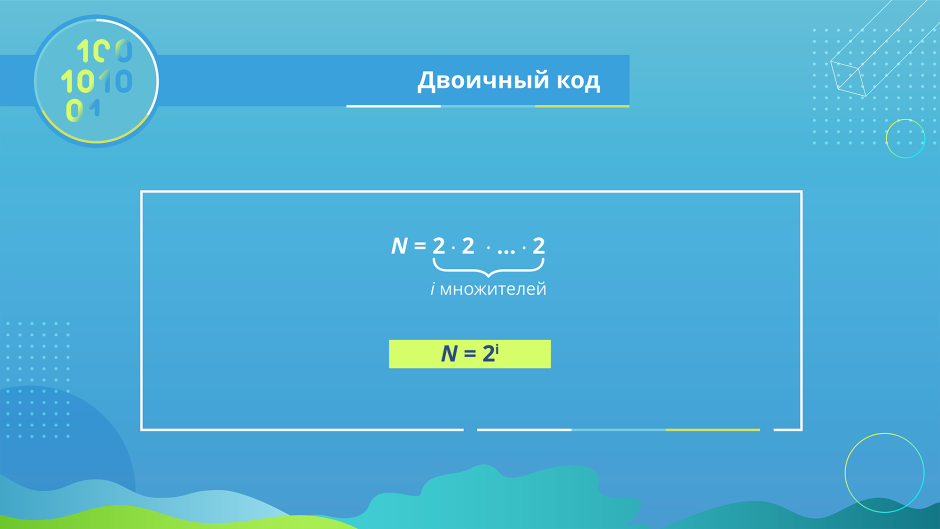
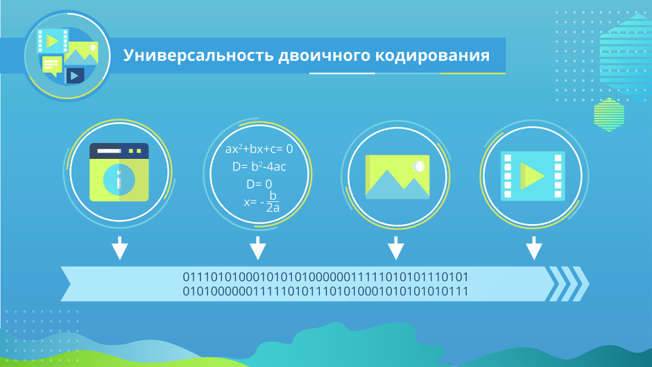

Урок 5. Кодирование информации. Двоичный код
Перечень рассматриваемых вопросов:
- Понятие код.
- Понятие кодирования информации.
- Двоичный код.
Тезаурус:
Дискретизация информации – процесс преобразования информации из непрерывной формы представления в дискретную. Чтобы представить информацию в дискретной форме, её следует выразить с помощью символов какого-нибудь естественного или формального языка.
Алфавит языка – конечный набор отличных друг от друга символов, используемых для представления информации. Мощность алфавита – это количество входящих в него символов.
Алфавит, содержащий два символа, называется двоичным алфавитом. Представление информации с помощью двоичного алфавита называют двоичным кодированием. Двоичное кодирование универсально, так как с его помощью может быть представлена любая информация.
Теоретический материал для самостоятельного изучения
Кодирование информации
Для решения своих задач человеку часто приходится преобразовывать имеющуюся информацию из одной формы представления в другую. Например, при чтении вслух происходит преобразование информации из дискретной (текстовой) формы в непрерывную (звук). Во время диктанта на уроке русского языка, наоборот, происходит преобразование информации из непрерывной формы (голос учителя) в дискретную (записи учеников).
Информация, представленная в дискретной форме, значительно проще для передачи, хранения или автоматической обработки. Поэтому в компьютерной технике большое внимание уделяется методам преобразования информации из непрерывной формы в дискретную.
Дискретизация информации – процесс преобразования информации из непрерывной формы представления в дискретную.
Рассмотрим суть процесса дискретизации информации на примере.
На метеорологических станциях имеются самопишущие приборы для непрерывной записи атмосферного давления. Результатом их работы являются барограммы – кривые, показывающие, как изменялось давление в течение длительных промежутков времени. Одна из таких кривых, вычерченная прибором в течение семи часов проведения наблюдений, показана на рисунке 1.
На основании полученной информации можно построить таблицу, содержащую показания прибора в начале измерений и на конец каждого часа наблюдений.

Полученная таблица даёт не совсем полную картину того, как изменялось давление за время наблюдений: например, не указано самое большое значение давления, имевшее место в течение четвёртого часа наблюдений. Но если занести в таблицу значения давления, наблюдаемые каждые полчаса или 15 минут, то новая таблица будет давать более полное представление о том, как изменялось давление.
Таким образом, информацию, представленную в непрерывной форме (барограмму, кривую), мы с некоторой потерей точности преобразовали в дискретную форму (таблицу).
В дальнейшем вы познакомитесь со способами дискретного представления звуковой и графической информации.
Двоичное кодирование
В общем случае, чтобы представить информацию в дискретной форме, её следует выразить с помощью символов какого-нибудь естественного или формального языка. Таких языков тысячи. Каждый язык имеет свой алфавит.
Алфавит – конечный набор отличных друг от друга символов (знаков), используемых для представления информации. Мощность алфавита – это количество входящих в него символов (знаков).
Алфавит, содержащий два символа, называется двоичным алфавитом (рис. 3). Представление информации с помощью двоичного алфавита называют двоичным кодированием. Закодировав таким способом информацию, мы получим её двоичный код.
Рассмотрим в качестве символов двоичного алфавита цифры 0 и 1. Покажем, что любой алфавит можно заменить двоичным алфавитом. Прежде всего, присвоим каждому символу рассматриваемого алфавита порядковый номер. Номер представим с помощью двоичного алфавита. Полученный двоичный код будем считать кодом исходного символа.

Если мощность исходного алфавита больше двух, то для кодирования символа этого алфавита потребуется не один, а несколько двоичных символов. Другими словами, порядковому номеру каждого символа исходного алфавита будет поставлена в соответствие цепочка (последовательность) из нескольких двоичных символов. Правило получения двоичных кодов для символов алфавита мощностью больше двух можно представить схемой на рисунке.

Двоичные символы (0,1) здесь берутся в заданном алфавитном порядке и размещаются слева направо. Двоичные коды (цепочки символов) читаются сверху вниз. Все цепочки (кодовые комбинации) из двух двоичных символов позволяют представить четыре различных символа произвольного алфавита:

Цепочки из трёх двоичных символов получаются дополнением двухразрядных двоичных кодов справа символом 0 или 1. В итоге кодовых комбинаций из трёх двоичных символов получается 8 – вдвое больше, чем из двух двоичных символов:

Соответственно, четырёхразрядный двоичный код позволяет получить 16 кодовых комбинаций, пятиразрядный – 32, шестиразрядный – 64 и т. д.
Длину двоичной цепочки – количество символов в двоичном коде – называют разрядностью двоичного кода.
Обратите внимание, что:
4 = 2 ∙ 2,
8 = 2 ∙ 2 ∙ 2,
16 = 2 ∙ 2 ∙ 2 ∙ 2,
32 = 2 ∙ 2 ∙ 2 ∙ 2 ∙ 2 и т. д.
Здесь количество кодовых комбинаций представляет собой произведение некоторого количества одинаковых множителей, равного разрядности двоичного кода.
Если количество кодовых комбинаций обозначить буквой N, а разрядность двоичного кода – буквой i, то выявленная закономерность в общем виде будет записана так:

В математике такие произведения записывают в виде:
N = 2i.
Запись 2i читают так: «2 в i-й степени».
Задача. Вождь племени Мульти поручил своему министру разработать двоичный код и перевести в него всю важную информацию. Двоичный код какой разрядности потребуется, если алфавит, используемый племенем Мульти, содержит 16 символов? Выпишите все кодовые комбинации.
Решение. Так как алфавит племени Мульти состоит из 16 символов, то и кодовых комбинаций им нужно 16. В этом случае длина (разрядность) двоичного кода определяется из соотношения: 16 = 2i. Отсюда i = 4.
Чтобы выписать все кодовые комбинации из четырёх 0 и 1, воспользуемся схемой на рис. 1.13: 0000, 0001, 0010, 0011, 0100, 0101, 0110, 0111, 1000, 1001, 1010, 1011, 1100, 1101, 1110, 1111.
Универсальность двоичного кодирования
В начале нашей беседы вы узнали, что информация, представленная в непрерывной форме, может быть выражена с помощью символов некоторого естественного или формального языка. В свою очередь, символы произвольного алфавита могут быть преобразованы в двоичный код. Таким образом, с помощью двоичного кода может быть представлена любая информация на естественных и формальных языках, а также изображения и звуки (рис. 6). Это и означает универсальность двоичного кодирования.

Двоичные коды широко используются в компьютерной технике, требуя только двух состояний электронной схемы – «включено» (это соответствует цифре 1) и «выключено» (это соответствует цифре 0).
Простота технической реализации – главное достоинство двоичного кодирования. Недостаток двоичного кодирования – большая длина получаемого кода.
Равномерные и неравномерные коды
Различают равномерные и неравномерные коды. Равномерные коды в кодовых комбинациях содержат одинаковое число символов, неравномерные – разное.
Выше мы рассмотрели равномерные двоичные коды.
Примером неравномерного кода может служить азбука Морзе, в которой для каждой буквы и цифры определена последовательность коротких и длинных сигналов. Так, букве Е соответствует короткий сигнал («точка»), а букве Ш – четыре длинных сигнала (четыре «тире»). Неравномерное кодирование позволяет повысить скорость передачи сообщений за счёт того, что наиболее часто встречающиеся в передаваемой информации символы имеют самые короткие кодовые комбинации.